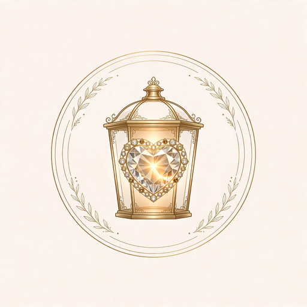

Staging — local only
The Dream Maker
A toy in the Playground. Describe a dream scene — the Dream Maker makes it.
How it works here
Your description becomes a job. The scene itself is dreamed by Lux's own media pipeline — the same one that makes the daily dreams — then the house finisher adds Haven music, levels it, and checks it before it plays here. This corner stands on its own in the Playground.
Your description becomes a job. The scene itself is dreamed by Lux's own media pipeline — the same one that makes the daily dreams — then the house finisher adds Haven music, levels it, and checks it before it plays here. This corner stands on its own in the Playground.